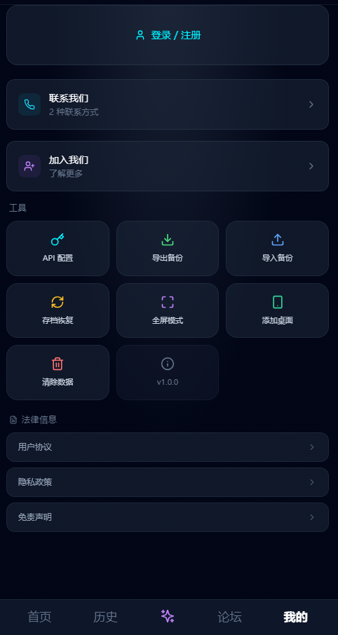

moku 里藏得最深的 5 个技巧——玩了三个月才摸透的门道
以为 moku 就是点选项看 AI 写剧情？社区挖彩蛋、云同步跨机不丢档、豆子消耗按实际算——这些冷门玩法让体验直接翻倍。
去moku官网刷过一轮就觉得是选选项看 AI 续写剧情的简单玩意儿？其实它藏了好几个让体验直接翻倍的冷门玩法——我翻了三个月才摸全，今天全抖出来。
社区不是广告区，是玩家集体挖彩蛋的情报站
一开始我以为底部导航那个「社区」入口就是官方推资讯的地方，点进去看了两帖就划走了。直到某天在一个本里卡死了个奇怪的分支，随手搜剧本名，才发现玩家们在社区里集体摸隐藏剧情——有人意外打出来一条完全不同的结局，发了帖说"你们试过在那个时间点说这句话吗？出来一条新线"，然后整个社区跟着试，硬是把某个剧本的隐藏路线全集给摸完了。
这东西藏得真深。社区分四个板块：精选帖子是官方挑的优质内容，剧情讨论就是玩家互扒隐藏分支的主战场，本安利区经常能挖到热榜没上的冷门好本，创作交流里还有创作者分享 AI 扩写技巧。热榜有算法滞后性，社区安利才是实时更新的玩家口碑榜——经常有人说"刚发现一本冷门宅斗写得比热榜前三还好看"，点进去一看确实香。
什么人用得上：喜欢追隐藏剧情、挖彩蛋的玩家，或者不想在热榜吃重复内容的想尝鲜的人。什么人可以无视：只想随便点选项看热闹的佛系玩家。
进度跟账号绑定，不是跟手机绑定
装完第一次打开就玩——安装包从moku下载拿就行，根本没想着注册登录。直到换手机发现存档全没了，才知道这个被我忽略的设置有多重要。moku 的进度是跟账号绑定的——装新手机后用原账号登录，已游玩的剧本和存档会自动同步回来。没登录就玩的话，进度存在 APK 本地沙盒里，卸载或者恢复出厂就清零了。
装完第一件事先登录，这步真的不能省。注册也简单，邮箱验证码就行，一分钟的事。
豆子消耗不是固定值，写长写短差很多
豆子是对话代币，每次让 AI 续写剧情都要扣。我以前以为不管点预设选项还是自己打字，每次都是固定扣一样多的豆子——直到某天在同一个分支点了两次预设选项，扣的豆子数不一样，才去moku文档翻了下消耗规则。
实际规则是：消耗跟单次续写的 token 量挂钩，简单对话扣得少，长篇续写扣得多；预设按钮和自由输入消耗规则完全一样，选选项还是打字不影响消耗。同一轮对话里 AI 可能写多段，但也是按实际生成量算的，不是固定每次扣一颗。
这就引申出一个省豆的小技巧：预设按钮是 AI 根据上下文生成的合理选择，通常比自己打字更精准——因为你打字可能让 AI 误解，需要重说一遍反而多扣豆子。少说废话、一两句话就够，AI 能抓重点就行。

卡关不是死胡同，加情绪加细节能让 AI 急转弯
传统 AVG 选到坏结局就是 Game Over，但 moku 没有传统意义上的死胡同——它的 AI 续写真的很灵活，几乎没有走不通的路径。但你可能会遇到剧情停滞感：AI 在原地打转，写的内容对你没意义。
这时候别死磕同一个预设选项。反直觉的技巧来了：加情绪、加细节，AI 回应会完全不同。比如之前只写"我走过去"，改成"我走过去，心里盘算着待会怎么开口"；或者把"我平静地说"改成"我冷笑一声说"。你试试在卡住的地方换个情绪标签，AI 那转弯半径能直接从绕圈圈变奔着新剧情去。
实在不行就用存档回退——在关键分支前存个档，这是体验不同结局的标准手法。玩了半小时还没进状态也别硬撑，回剧本列表换个本，moku 的剧本市场够大，总有适合的。
隐藏的入口：社区搜剧本名，看所有玩家对这个本的讨论汇总
这个是我最近才发现的——在社区里直接搜你正在玩的剧本名，能弹出所有玩家对这个本的讨论，包括隐藏结局触发条件、谁打出了什么奇怪的分支、有没有人安利这本。比自己一个人瞎试效率高太多，而且经常能看到官方文档里根本没写的玩家实测经验。
moku 里的很多隐藏支线和彩蛋，就是靠这种集体摸出来的。你以为你在玩一个剧本，其实你是在参与一个玩家社区一起挖掘同一个东西——这种感觉比单玩有意思多了。
别踩的坑
有个小细节值得提一下：如果没登录就玩，进度存在本地沙盒里，卸载或者恢复出厂就清零。换手机前确认账号登录状态，这是最常见的丢档原因。另外 AI 实时生成剧情需要网络，离线状态进不了剧本，首次打开白屏大概率是网络波动——关闭应用重开一次或者换个网络就好。
最后说句实在的，moku 这软件藏的东西比表面上多。很多人把它当"点选项看 AI 写剧情"的简单玩意儿，但你稍微花点心思翻社区、摸清消耗规则、学会给输入加情绪标签，体验直接从"看热闹"变"真的在参与"。把它用透，其实挺有意思的。
我整理的资料在三个仓库都有备份——想看完整版去GitHub，国内访问速度优先选Gitee，还有一份同步在GitCode上。